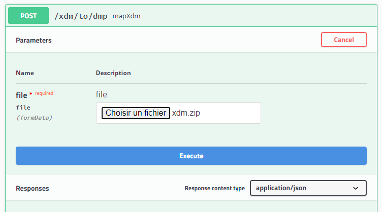
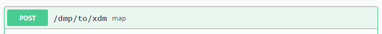
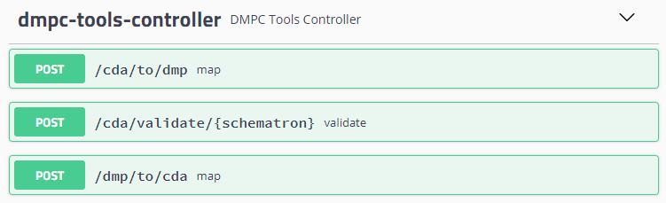
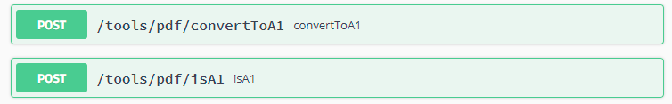

SEGUR : la DevBox-Santé dans le référentiel d’exigences Hopital
Outils XDM
Scenario HOP-11
Dans le Référentiel d’exigences – Hôpital – DPI – Annexe 1 – Vague 1 (xlsx), on peut lire l’exigence HOP-11.
Le système DOIT proposer une interface pour intégrer, a minima de façon manuelle, voire de façon automatique, les documents en CDAR2 N1 reçus via MSSanté au format IHE_XDM.zip.
Cette exigence demande de pouvoir récupérer un fichier attaché au format XDM.zip d’un document reçu de la Messagerie Sécurisé de Santé. Récupérer ce fichier et l’interpréter via la DevBox-Santé rien de plus simple, il suffit de réaliser un POST HTTP à la boite à outils XDM :

ou autrement dit en curl :
curl -X POST "http://localhost:8080/xdm/to/dmp" -H "accept: application/json" -H "Content-Type: multipart/form-data" -F "file=@xdm.zip;type=application/x-zip-compressed"
La DevBox-santé va lire l’archive ZIP, l’interpréter, et vous obtenez la réponse json suivante :
{
"comments": "submissionComments",
"contentType": "04",
"documents": [
{
"classCode": "10",
"comments": "document comments",
"confidentialities": [
"N"
],
"content": "ZG9jdW1lbnQgY29udGVudA==",
"creationTime": "20220608162831",
"entryUuid": "76875ea0-e741-41ae-93e6-a5026bb0b0f8",
"events": [
{
"code": "H33",
"codingScheme": "2.16.840.1.113883.6.3",
"displayName": "Décollement et déchirement de la rétine"
}
],
"format": "urn:ihe:iti:xds-sd:text:2008",
"legalAuthenticator": {
"internalId": "3750100125/123",
"nom": "auteurNom",
"prenom": "auteurPrenom",
"specialite": "G15_10/SM30",
"structureSante": {
"idNational": "1750100125",
"nom": "structureNom"
}
},
"patient": {
"ins": "279035121518989",
"insAutorite": "1.2.250.1.213.1.4.10",
"nomUsuel": "PAT-TROIS",
"prenomUsuel": "Dominique",
"dateDeNaissance": "19530724",
"ordreDeNaissance": 0,
"sexe": "M"
},
"practiceSetting": "AMBULATOIRE",
"serviceStartTime": "20111025",
"serviceStopTime": "20111125",
"title": "document titre",
"type": "11488-4",
"uniqueId": "1.2.250.1.287.1.1234567.1.16547057180821",
"repositoryUniqueId": "1.2.250.1.287.1.1234567",
"confidentialitiesAsListOfEnum": [
"N"
]
}
],
"patient": {
"ins": "279035121518989",
"insAutorite": "1.2.250.1.213.1.4.10",
"ordreDeNaissance": 0
},
"title": "submissionTitle",
"uuid": "83bd0ae8-ccfb-4313-bd6b-4ee77f73a0f8",
"uniqueId": "1.2.250.1.287.1.1234567.3.16547057180852"
}
Si vous avez déjà intégré la DevBox-Santé DMP vous remarquerez que c’est exactement la même structure de données que pour une soumission de documents vers le DMP. Le contenu binaire du document et dans la balise content encodé en Base64.
Vous voulez réaliser l’opération inverse, générer une archive XDM.zip à partir d’une soumission :

Outils CDA
Comme pour l’archive XDM, il est possible de lire/écrire les documents CDA R2 N1 à structuration minimale et récupérer un DMPCDocument de la DevBox-santé DMP.
Exigence DOC2
En effet, l’exigence DOC 2 nous dit :
Le système DOIT produire TYPE_DE_DOCUMENT au format CDA R2 N1 avec un PDF encapsulé en base 64 conformément au volet Structuration Minimale du CI-SIS [CISIS1].
Pour cela :

Outils PDF et Datamatrix INS
Exigenc DOC4
Mais encore, que répondre à l’exigence DOC4 :
Le système DOIT produire les documents “Lettre de liaison en sortie” et “Compte rendu opératoire” avec l’apposition du datamatrix INS dans le PDF/A-1 conformément au référentiel datamatrix de l’INS [INS5].
Pour cela, la DevBox-Santé peut vous aider également pour la génération des PDF/A :

Mais aussi pour les datamatrix INS : /insi/howtos/datamatrix/
Outils Annuaire
L’annuaire de la devbox-santé peut également répondre aux exigences concernant l’annuaire, comme par exemple ANN1 :
Le système DOIT être en capacité d’intégrer automatiquement l’extraction publique « PS_LibreAcces_Personne_activite » de l’annuaire santé.fr, conformément au Dossier des Spécifications Fonctionnelles et Techniques Fichiers d’extraction des données en libre accès [ANN1].
Une présentation de l’annuaire est disponible ici.